Aryamaan Borgohain_
Math Major
Hey, I am Aryamaan - an Undergrad Math major, interested in Scientific Computing, Computer graphics, Numerical
methods, Orbital mechanics and more.
I started out with finding this stuff interesting and self-learning through YouTube videos and tinkering with software, making 3D assets, software, and game
mechanics using Unity, C# and Blender among various other creative tools. Today my focus has transitioned to translating
analytical models into dynamic systems - specifically within the domains of Celestial
mechanics, Linear algebra, and Graphics programming.
Education
Completed secondary and senior secondary school.
Some of my major projects
OrbitForge: Celestial Mechanics Engine NEW!
Verlet Integration | Encke's Method

A high-accuracy celestial mechanics and orbital math suite engineered to solve orbital boundary value problems (BVP) using the Lancaster and Blanchard method (NASA 1969).
- Physics Backend: Universal Variables and Newton-Raphson iteration on a dynamically calculated Jacobian matrix.
- Numerical Stability: Encke's Method for N-body perturbations and Symplectic Velocity-Verlet integration.
- Parallelized Pipeline: Memory-optimized C++ core feeding into a CSV for a multiprocessed Python pipeline visualisation.
// SIMULATION TELEMETRY DATA


Computational Math Visualization Suite
A collection of tools built to visualize essential math concepts, especially ones I encountered in my first year that couldn't be just rote-memorised without questioning what they truly look like on a computer!
- Surface Rendering: Z-order chunk rendering algorithm using manually calculated surface normals for accurate depth buffering.
- Performance: Python multiprocessing pipeline achieving a 10x speedup in frame sequence rendering.
- Algorithm Verification: Included an empirical $O(N^3)$ verification of Gaussian Elimination operation cost via least-squares polynomial curve fitting.
// SURFACE NORMALS VISUALIZATION
Check out my research!
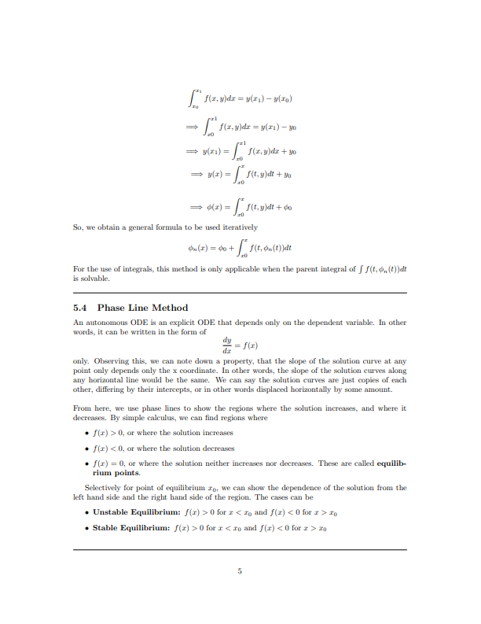
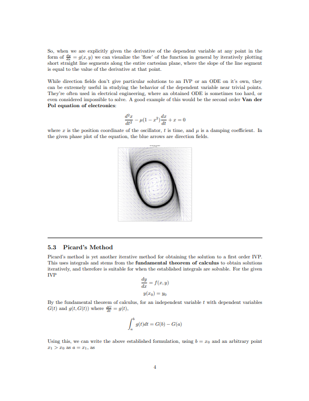
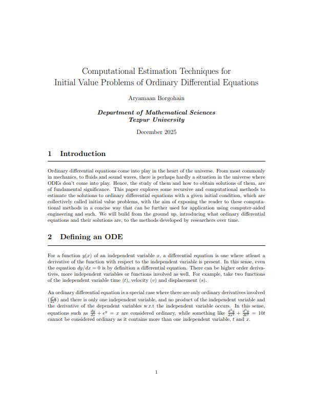
Computational Estimation of Initial Value Problems December 2025
An elementary unpublished literature review compiling some Computational estimation techniques for Initial Value Problems. Served as LaTeX learning project.
Integrates various numerical methods and visualisations from RK1 to Phase Lines, Slope Fields, Taylor Series and Picard's Method.
[PDF] Read full paper3D Environments & Technical Art
Stonehill Road Bungalow
An atmospheric environment of a house situated in the forest areas, with an abandoned church to its backside. Served as a map for an in-progress game at that time, tentatively titled Profane Locus.
I have plans to return to it in the future with good skills, and lots of built discipline!
// CINEMATIC SHOWCASE (SCROLL HORIZONTALLY)
// ENVIRONMENT STILLS
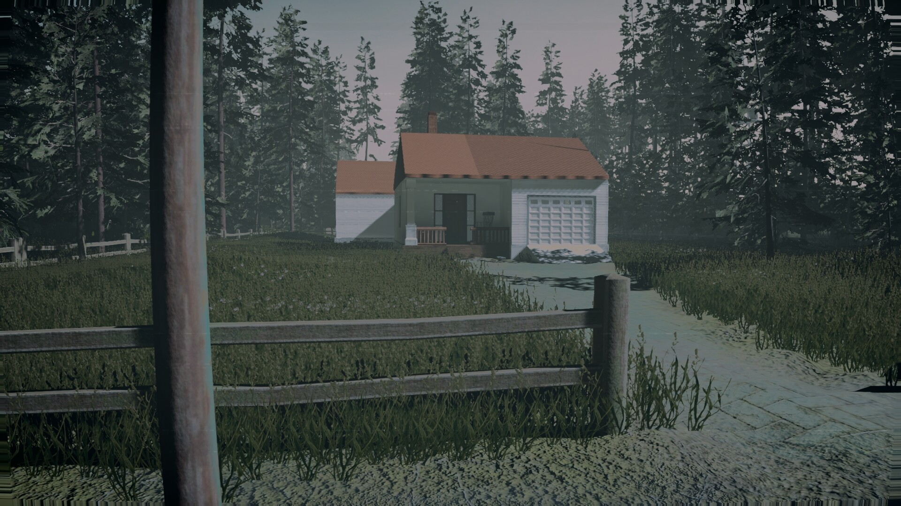
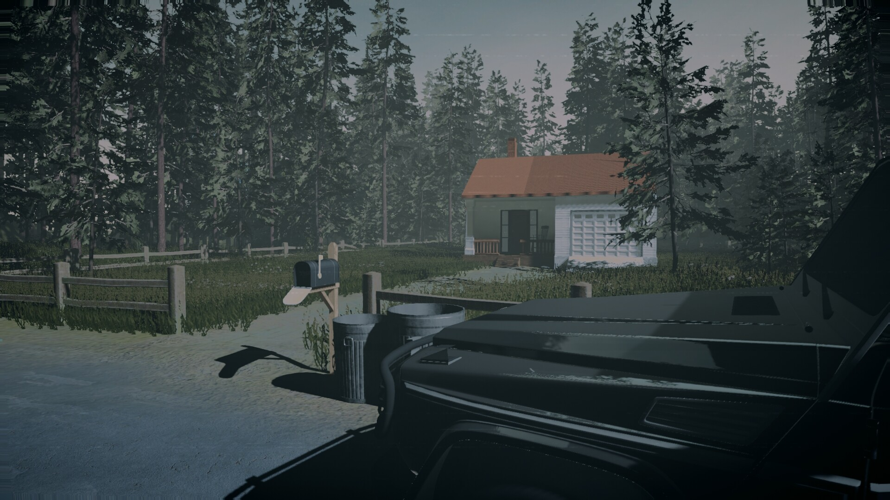
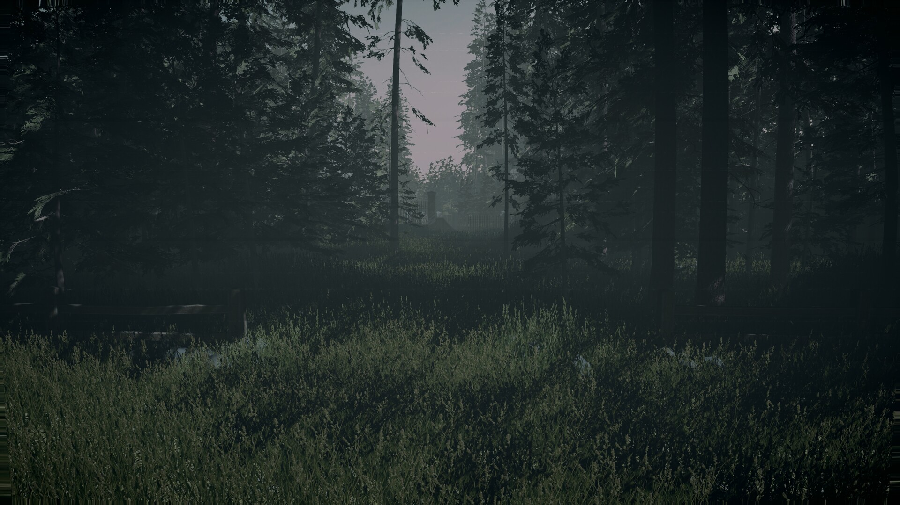
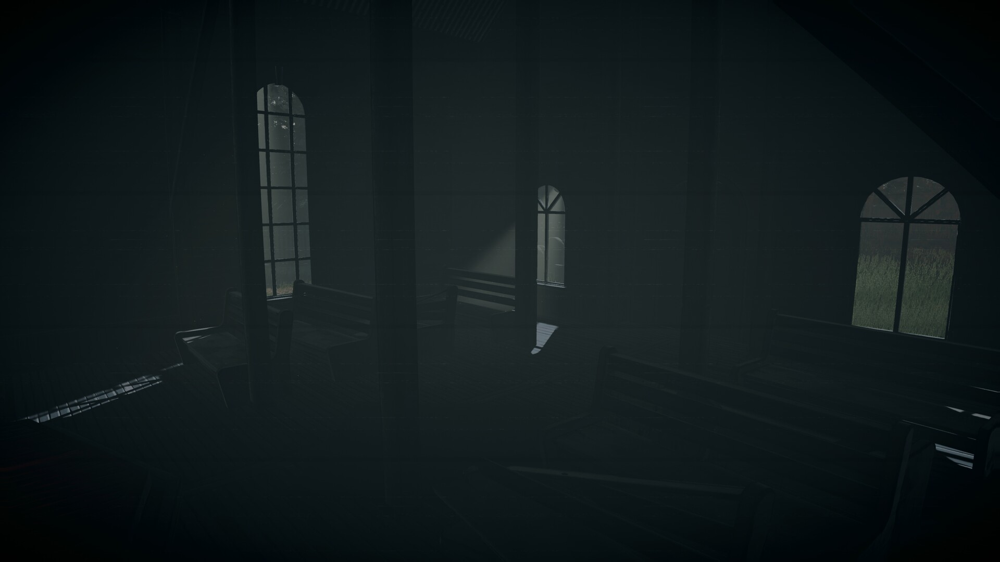
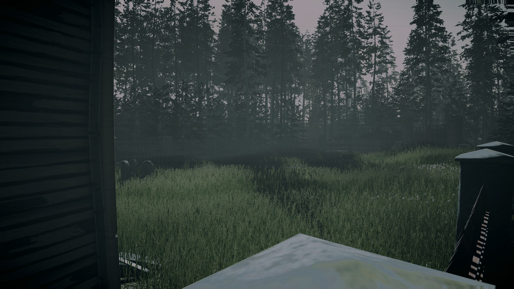
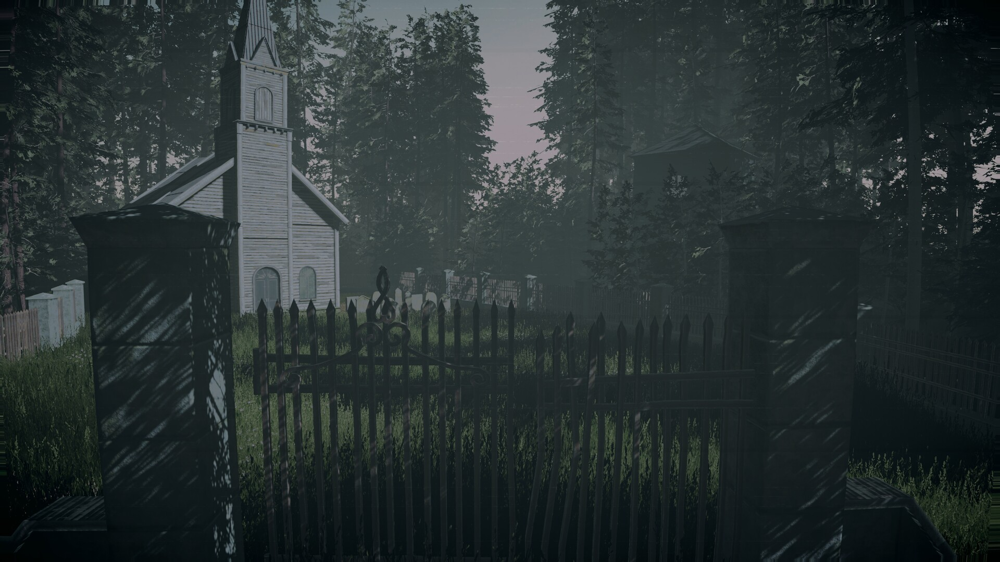
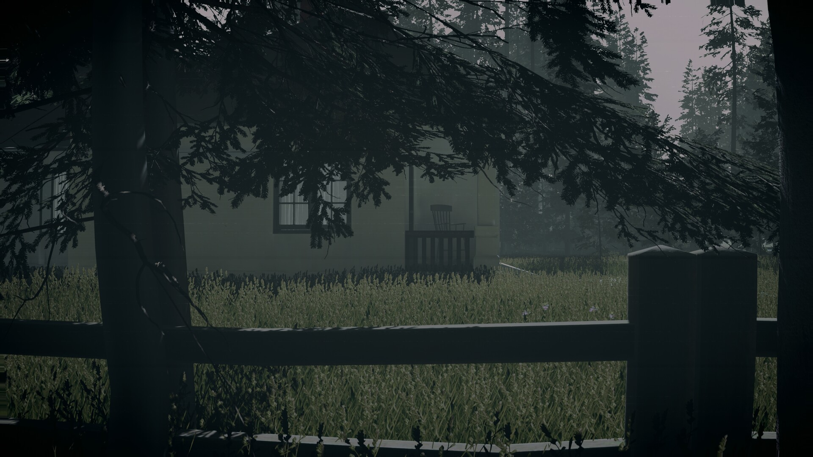
Architectural Visualization & Prop Modeling
Environments and props focusing on procedural texturing, physically based rendering (PBR), and custom graphics pipeline shaders.
- Graphics Logic: Optimized Shader Graphs and C# scripts to simulate volumetric lighting effects in real-time.
- Topology: Focused on clean topology + optimized hard-surface modeling for game engines and clean UV mapping.
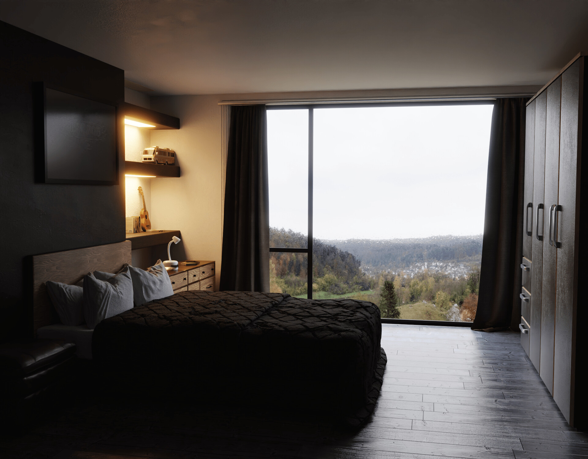

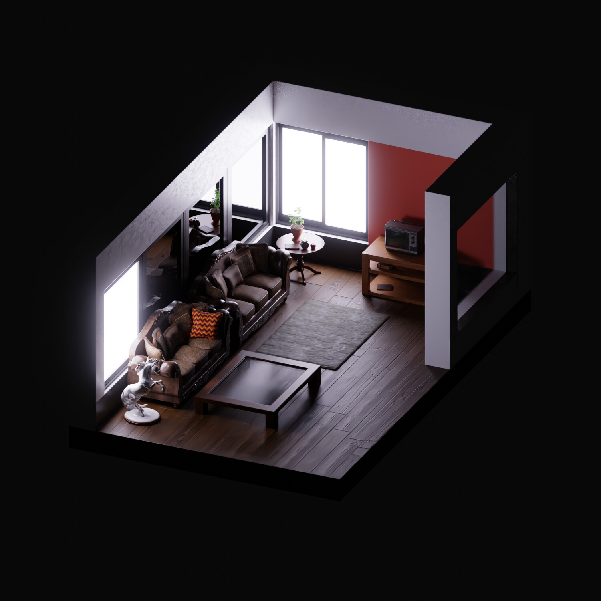
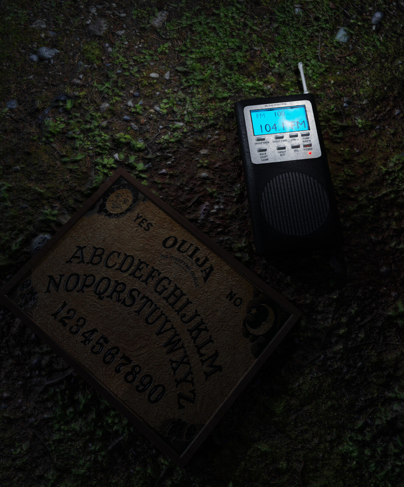
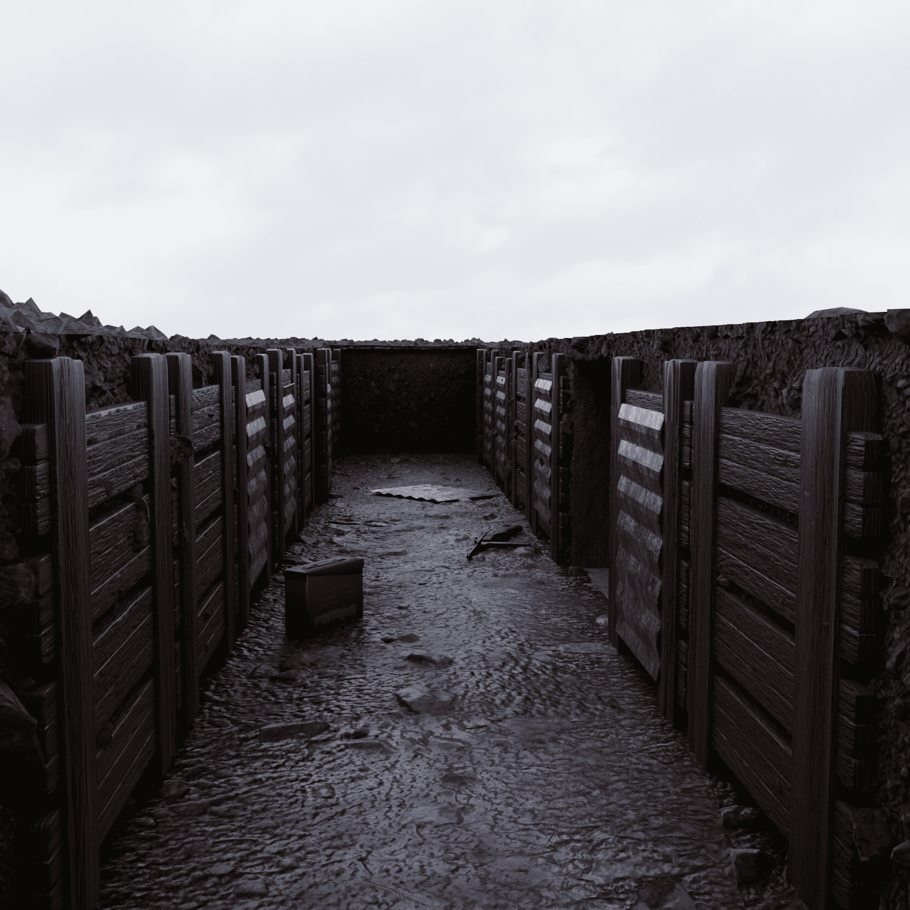